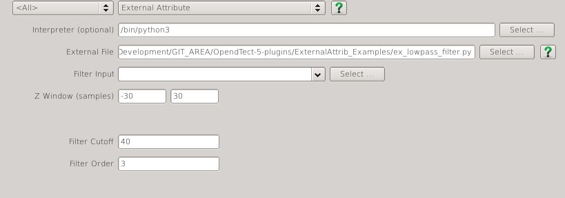

This attribute plugin for the open source seismic interpretation platform OpendTect allows attributes to be developed in a scripting language like Python.
Description
With this plugin it is possible to calculate single and multitrace attributes outside of OpendTect using a user specified external application. The plugin supports multi-trace multi-attribute input and multi-attribute output as well as parallel execution.
NOTE: Releases prior to 6.0.2 allowed multi-trace multi-attribute input only if all the attributes were in the same multi-attribute volume. In releases from 6.0.2 onward this limitation has been removed.
Instead of doing the attribute calculation within OpendTect this plugin starts up a user specified external application and then reads and writes the trace data to/from the external application's stdin and stdout. The external application could be written in any programming language, compiled or interpreted, provided it has the Structure of a Conforming Application. This essentially means you can write a new OpendTect attribute in your computer language of choice and not have to delve into the internals of OpendTect.
A reference implementation for writing external attributes in Python/Numpy (version 3) is available. This consists of a module extattrib.py that handles the stdin/stdout details and presents the trace data as a numpy array. Guides and Tips and Tricks to assist can be found in various Articles
There are external attribute scripts for everything from dip estimation to filtering described in the External Attributes section of this documentation.
Input Parameters
This attribute has 3 required parameters and up to 9 optional parameters determined by the JSON Parameter String provided by the external attribute script:
| NAME | DESCRIPTION |
|---|---|
| Interpreter | For external attributes written in a scripted language this field specifies the location of the interpreter required to run the script, eg /usr/bin/python3 |
| External File | The external application to be used for attribute calculation. |
| Input | The input attribute to use |

Cross Platform Setup
Prior to release 5.10 and 6.0.0pre7-1 any attribute set containing external attributes could not be shared between Windows and Linux because the Interpeter and External File input fields contain platform specific file paths.
Release 5.10 and 6.0.0pre7-1 introduced an optional mechanism to support cross platform attribute sets containing external attributes by using environment variables. Consider the following script for starting OpendTect on Linux:
#!/bin/csh -f setenv DTECT_SETTINGS "$HOME/.od6" setenv OD_USER_PLUGIN_DIR "$HOME/.od6" setenv EX_PYTHON "/opt/anaconda3/bin/python" setenv OD_EX_DIR "$HOME/Development/GIT_AREA/OpendTect-External-Attributes/" /opt/seismic/OpendTect_6/6.0.0/start_dtect
And an equivalent Windows command file:
@set OD_USER_PLUGIN_DIR=%HOMEPATH%\od6 @set EX_PYTHON=C:\Miniconda3\python.exe @set OD_EX_DIR=E:\Development\GIT_AREA\OpendTect-External-Attributes\ start "" "C:\Program Files\OpendTect_6\6.0.0\bin\win64\Release\od_start_dtect.exe"
The environment variable EX_PYTHON points to the python interpreter for each platform and entering %EX_PYTHON% into the Interpreter input field ensures the platform appropriate interpreter is used. Any name can be used for the environment variable.
The environment variable OD_EX_DIR points to a root folder below which the attribute script files can be found. The setting in the Linux startup script points to a Linux folder. The corresponding setting in the Windows command file points to the same location via a network share. This environment variable name is hard wired into the code so this variable name cannot be changed. Note that the script files cam be located in subfolders of the OD_EX_DIR folder.
This type of setup produces attribute set descriptions like this:
7.Definition: ExternalAttrib interpfile=%EX_PYTHON% exfile=%OD_EX_DIR%tests/ex_ui_test_all.py zmargin=[-1,1] stepout=1,1 selection=2 par0=0 par1=1 par2=2 par3=3 par4=4 par5=5 output=0
which can be used on either platform without change.
Attribute sets created by release 5.0.10 and 6.0.0pre7-1 and later that use these environment variables will not work in earlier versions of the External Attribute plugin.
JSON Parameter String
The external application can specify a set of parameters as a JSON object string. The following keywords are supported:
| JSON KEYWORD | Input (depreciated) |
|---|---|
| TYPE | String |
| DESCRIPTION | Specifies a label to appear beside the input attribute selection UI element. Superceded by the "Inputs" keyword but is supported for backward compatibility. |
| EXAMPLE | 'Input': 'Input Data' |
| JSON KEYWORD | Inputs |
|---|---|
| TYPE | Array of Strings |
| DESCRIPTION | Each string is used as a label for an input attribute selection UI element. Currently limited to a maximum of 6 attribute inputs. |
| EXAMPLE | 'Inputs': ['Input 1','Input 2','Input 3'] |
| JSON KEYWORD | Output (optional) |
|---|---|
| TYPE | Array of Strings |
| DESCRIPTION | Each string specifies the name of an output attribute.If this keyword is not supplied a single output attribute is assumed. |
| EXAMPLE | 'Output': ['Out 1','Out 2','Out 3'] |
| JSON KEYWORD | ZSampMargin (optional) |
|---|---|
| TYPE | Object with a 'Value' (array of 2 numbers) and optional 'Hidden' (boolean) and 'Symmetric' (boolean) parameters. |
| DESCRIPTION | The 'Value' parameter is an array of 2 numbers specifing the desired minimum number of samples before and after the calculation point required for the calculation respectively. If not supplied only a single value will be provided when the attribute is computed on a timeslice or horizon.The optional 'Hidden' parameter is a boolean which if set to true makes the ZSampMargin parameter read only.The optional 'Symmetric' parameter is a boolean which if true causes only a single entry to be displayed in the UI.The optional 'Minimum' parameter is an array of 2 numbers specifying a minimum required window size |
| EXAMPLE | 'ZSampMargin': {'Value': [-2,2]} 'ZSampMargin': {'Value': [-2,2], 'Symmetric': True} |
| JSON KEYWORD | StepOut (optional) |
|---|---|
| TYPE | Object with a 'Value' (array of 2 numbers) and optional 'Hidden' (boolean) parameters. |
| DESCRIPTION | The 'Value' parameter is an array of 2 numbers specifing the inline and crossline stepout defining the block of traces to be used around the current calculation position. If not supplied only a single trace is provided.The optional 'Hidden' parameter is a boolean which if set to true makes the StepOut parameter read only.The optional 'Minimum' parameter is an array of 2 numbers specifying a minimum required stepout. |
| EXAMPLE | 'StepOut': {'Value': [2,2]} 'StepOut': {'Value': [2,2], 'Hidden': True} |
| JSON KEYWORD | Select (optional) |
|---|---|
| TYPE | Object with a 'Name' (string), 'Values' (array of strings) and 'Select' (number) parameters. |
| DESCRIPTION | Displays a list box labeled 'Name' with options specified in 'Values' and default selection being item number 'Select'. |
| EXAMPLE | 'Select': {'Name': 'Type', 'Values': ['None', 'Median', 'Average'], 'Selection': 0} |
| JSON KEYWORD | Par_0, Par_1, Par_2, Par_3, Par_4, Par_5 (all optional) |
|---|---|
| TYPE | Object with a 'Name' (string) and 'Value' (number) parameter. |
| DESCRIPTION | Displays an entry box labeled 'Name' with default value 'Value'. |
| EXAMPLE | 'Par_0' : {'Name': 'First Parameter', 'Value' : 100.0}'Par_1' : {'Name': 'Second Parameter', 'Value' : 200.0} |
| JSON KEYWORD | Help (optional) |
|---|---|
| TYPE | String |
| DESCRIPTION | URL pointing to documentation for the external attribute. Causes an icon help button to be displayed in the UI. |
| EXAMPLE | 'Help' : 'http://waynegm.github.io/OpendTect-Plugin-Docs/External-Attributes/LPA-Attributes/' |
| JSON KEYWORD | Parallel (optional) |
|---|---|
| TYPE | Boolean |
| DESCRIPTION | Default is True which allows parallel execution. If set to False then calculations only use a single thread. |
| EXAMPLE | 'Parallel' : False |
Here is an example parameter string:
{
'Inputs': ['Test Input'],
'Output': ['Left', 'Right'],
'ZSampMargin' : {'Value': [-10,10]},
'StepOut' : {'Value': [1,1], 'Hidden': true},
'Par_0' : {'Name': 'First Parameter', 'Value' : 100.0},
'Par_1' : {'Name': 'Second Parameter','Value': 200.0},
'Help' : 'https://gist.github.com/waynegm/84f323ec4aab3961c23d'
}
Issues
OpendTect (Linux) hangs after selecting a Python external attribute in the Attribute Description Editor
This can happen if the Python file has Windows/DOS linebreaks. Use the dos2unix command on the Python file and all should be ok.
Setting up a Python/Numpy/Scipy environment
On both Linux and Windows it can be a bit of a pain to set up a Python/Numpy/Scipy development stack for Python 3 from scratch. Continuum Analytics provide free Python installers for Linux and Windows in Anaconda. There is also a smaller DIY option called Miniconda which allows you to select just the packages you need (the examples only require Python 3, Numpy and Scipy).
Structure of a Conforming Application
The rules that a comforming application must follow are described below and the extattrib.py module included in the plugin distribution provides a reference implementation.
- When invoked with a commandline argument of
-gthe application should write out a JSON Parameter String to stdout describing the attribute parameters and exit. - When invoked with a commandline argument of
-c json-parameter-stringthe application- should read and parse the contents of
json-parameter-stringto get the attribute parameters - read a 40 byte block of binary data from stdin called the SeismicInfo block (described below)
- start an endless loop that:
- reads a 16 byte block of binary data from stdin called the TraceInfo block (described below)
- reads a data block of 4 byte binary floats from stdin that contains the seismic trace data. The size of the data block depends on the content of the SeismicInfo (number of traces and number of inputs) and TraceInfo ( number of samples) blocks
number_of_inputs * number_of_traces * number_of_samples * 4 bytes.
- calculates the attribute output
- writes a data block of 4 byte binary floats to stdout that contains the attribute output. The size of the output data block depends on the content of the TraceInfo ( number of samples) block and the number of output attributes
number_of_samples * number_of_outputs * 4 bytes.
- should read and parse the contents of
SeismicInfo Block
This block of binary data is written to the applications stdin immediately after it is started with the -c argument. It consists of 40 bytes as follows:
| SIZE | FORMAT | INDEX | DESCRIPTION |
|---|---|---|---|
| 4 bytes | integer | nrtraces | number of traces for each input attribute |
| 4 bytes | integer | nrinput | number of input attributes |
| 4 bytes | integer | nroutput | number of output atrributes |
| 4 bytes | integer | nrinl | number of inline traces in the input data block |
| 4 bytes | integer | nrcrl | number of crossline traces in the input data block |
| 4 bytes | float | zstep | trace sampling interval (result of OpendTect API call SI().zstep()) |
| 4 bytes | float | inldist | distance between inlines (result of OpendTect API call SI().inlDistance() |
| 4 bytes | float | crldist | distance between crosslines (result of OpendTect API call SI().crlDistance()) |
| 4 bytes | float | zFactor | (result of OpendTect API call zFactor()) |
| 4 bytes | float | dipFactor | (result of OpendTect API call dipFactor()) |
TraceInfo Block
This block of binary data is written to the application stdin immediately before each block of trace data. It consists of 16 bytes as follows:
| SIZE | FORMAT | INDEX | DESCRIPTION |
|---|---|---|---|
| 4 bytes | integer | nrsamp | number of samples in each trace within the input data block (OpendTect nrsamples parameter) |
| 4 bytes | integer | z0 | position of first sample in data trace within entire seismic trace ( OpendTect z0 parameter) |
| 4 bytes | integer | inl | inline number of current calculation position |
| 4 bytes | integer | crl | crossline number of current calculation position |